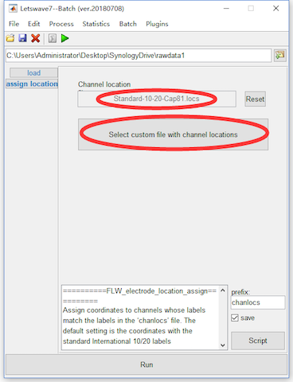
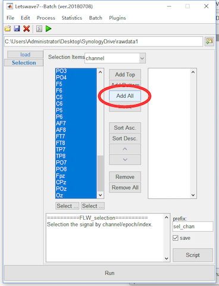
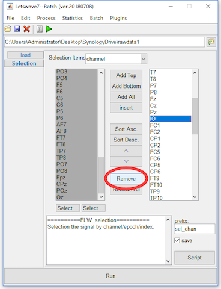
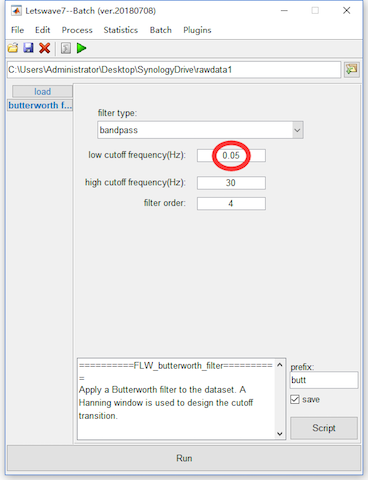
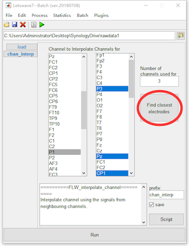

Raw EEG signal is noisy. Preprocessing is quite necessary to improve the signal noise ratio to obtain a “clear” EEG data. While, it is almost impossible to completely distinguish between noise and signals. The signal and noise are always mixed together in EEG signal. In some steps, some artifact can be easily identified and removed. While some steps may filter out part of the signals while denoising. Further, some steps would even introduce some noise.
For beginners, it is always desired to have a standard operating procedure and universal parameter settings in the EEG analysis. Unfortunately, there is no standard procedure in the EEG preprocessing. The signal in certain frequency band is the object for analysis in one experiment, may be treated as a interference factor in another experiment. In addition, some operations still need the experience of the operator, like which epoch should reject, which channel should be interpolated and which component should be rejected in ICA. Hence, it is hard to say some processes is correct or not. Instead, it normally says that the operation is appreciated or reasonable.
Normally, we still have some principles in the EEG signal preprocessing. The commonly used methods for denoising in preprocessing are listed as follows,
- Channel location assignment
- Useless channels removing
- Frequency filtering
- Bad electrodes interpolation
- Segmentation/Epoching
- Artifact rejection
- ICA decomposing for artifacts removal
- Rereference
- Baseline correction
For the P300 dataset, we will introduce the operation of all these methods and the principles in the use of these methods would be discussed. ICA decomposing would be introduced separately in chapter 03. And some other methods, as epoching, artifacts rejection, rereference, and baseline correction would be introduced in chapter 04 with the time domain analysis together.
Step 1. Channel location assignment
The work of channel location assignment is to assign the coordinate information for each channel in the dataset. Letswave would automatically assign the channel location with commonly used 10-20 system. While in different EEG recording system, the coordinate of the same channel would be slightly different. If you find the automatic assigned coordinate is not correct, or the channel in your dataset does not follow the 10-20 system, Letswave7 still allows you to manually assign the channel location.
If you want to manually assign the channel location, you can do the following steps. Select the dataset “sub093”” in the data list of the manager module, and click Edit->Electrodes->Edit electrode coordinates in the menu. In the batch module, it is shown that the default assigned location file is “Standard-10-20-Cap81.locs”. Press the button “Select custom file with channel location” to select the custom file for channel location. In the folder of electrodes in Letswave7, there are several channel location files for different EEG recording system. You can also assign your own channel location file, if all these files are not appreciated. Click the button Run in the bottom of batch module, and then a new dataset with the name “chanlocs sub093” will be appeared in the data list of the manager module. Since the automatic assigned channel location in our dataset is OK, the step of channel location assignment is omitted in the preprocessing of P300 dataset.

Step 2. Useless channels removing
Sometimes, there would be some useless channels also recorded in the dataset. To make a efficient analysis and also save the storage space, we need to remove the useless channels. Here, we will show the removing of channel IO, which records the electrooculogram (EOG) signals. For ocular artifact removal, EOG signals is necessary for Graton and Coles’ method. By with the ICA method, EOG signal is nor necessary. To remove channel IO, we can select the dataset “sub093”” in the data list of the manager module, and click Edit->Arrange signals->Rearrange or delete epochs, channels, indexes in the menu. In the batch module, press the button Add all to add all the channels into left listbox. Then select channel IO and press button Remove to delete channel IO. Click the button Run in the bottom of batch module, and then a new dataset with the name “sel_chan sub093” will be appeared in the data list of the manager module.


Step 3. Frequency filtering
Frequency filtering is a effective way to filtered out the high frequency artifact, low frequency drifts and the 50/60Hz power-line interference. In letswave, the Butterworth IIR filter is applied for frequency filtering.
For the P300 dataset, since the positive component around 300ms is a slow wave, hence we bandpass filter as 0.05-30Hz. No notch filter for the 50Hz power-line interference would be applied, because it is already outside the range of the bandpass filter. Select the dataset “sel_chan sub093”” in the data list of the manager module, and click Process->Frequency analysis and filters->Butterworth filters in the menu. In the batch module, set the low cutoff frequency(Hz) as 0.05Hz, and click the button Run to run the bandpass filtering. A new dataset with the name “butt sel_chan sub093” will be appeared in the data list of the manager module.

Step 4. Bad electrodes interpolation
It is find channel P1 is bad when we check the imported raw data. In this step, we will interpolate channel P1 with the surround channels.
Select the dataset “butt sel_chan sub093”” in the data list of the manager module, and click Edit->Electrodes->Interpolate channel using neighbouring electrodes in the menu. In the batch module, select channel P1 in the Channel to Interpolate list box, then click the button Find closest electrodes. Since the Number of channels used for interpolation is 3 for the default setting, Letswave7 will find the closest electrodes “P3”, “Pz”, and “CP1” for interpolation automatically according to the location of the channels. Click the button Run for the bad electrodes interpolation. A new dataset with the name “chan_interp butt sel_chan sub093” will be appeared in the data list of the manager module.
